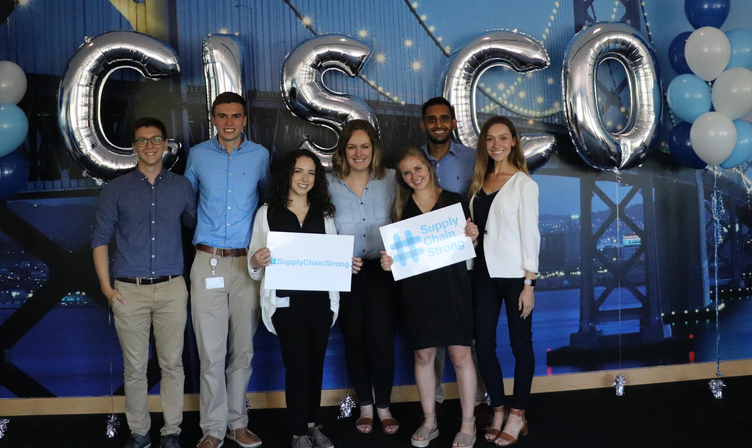
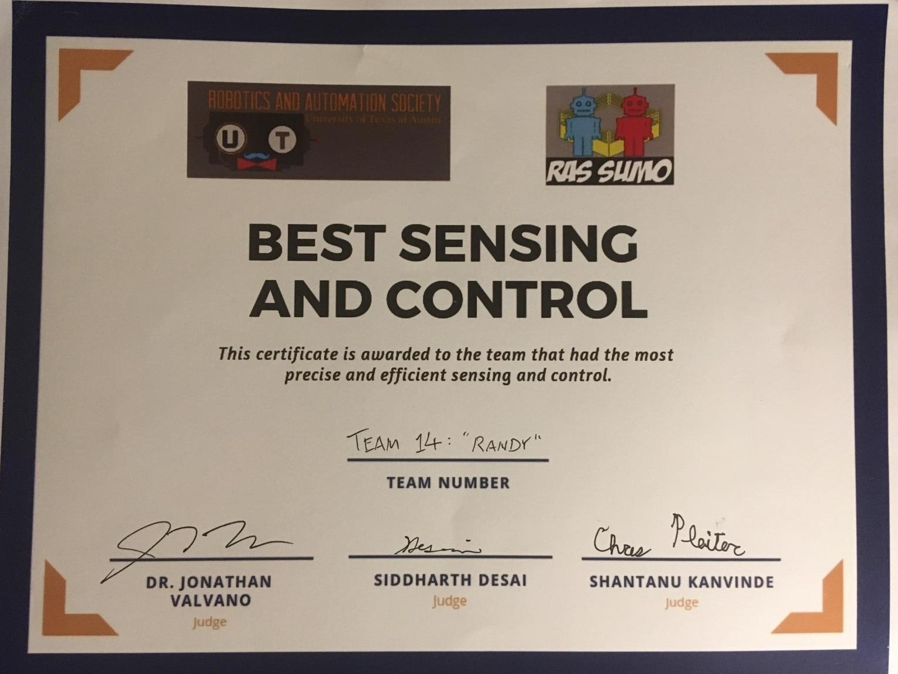

Juan Gonzalez De Mendoza
Education
-
The University of New Mexico
2021 - Present
-
The University of New Mexico
2021 - 2023
-
University of Texas at Austin
2017 - 2021 -
Austin Community College
2015 - 2017
Research Experience
Advisors: Corey Ostrove, Robin Blume-Kohout Summer 2023 - Present
Research in quantum characterization, verification, and validation (QCVV), with a focus on gate set tomography, gauge-invariant noise models, and the characterization of logical operations in quantum error correction.
- Develop automated model selection methods using first-order gauge-invariant (FOGI) parameters to identify physically meaningful errors in quantum gate sets.
- Co-developed a perturbative framework for small Markovian errors that uses FOGI properties to parameterize gate sets without gauge freedom and extract approximately gauge-invariant error metrics. Gauge-invariant error theory.
- Contributed to research introducing logical gate set tomography for characterizing noisy error-corrected operations. The work characterized a universal single-qubit logical gate set in the seven-qubit Steane code on Quantinuum H1, tested for coherent and non-Markovian logical errors, and used emulator-based error attribution to connect physical noise sources to logical errors. Logical gate set tomography.
Public Talks
- 03/24 Model Selection with First-Order Gauge-Invariant Parameters, APS March Meeting abstract
- 06/23 Quantum Key Distribution and Cryptography, CQuIC summer talk: Recording
Professional Experience
Company: Quantum Computing Inc.
Manager: Dave Morris
June 2021 - Jan 2023
Founded "QUBT University", a program designed to provide our quantum software for free to students all over the U.S. facilitating the entry point into the quantum computing field for everyone.
Company: Cisco
Location: San Jose, CA
Manager: Jeff Klaas
Summer 2019
Improved my department's continous integration by automating device tests every time a developer modified code in the repository corresponding to such device.
Professional Affiliations
Communications Officer, Technology Officer, and President. At The University of New Mexico
2022 - 2025
Served as Communications Officer, Technology Officer, and President of the Physics and Astronomy Graduate Student Association, supporting professional and social opportunities for graduate students. Organized community events and prepared organizational emails and newsletters.
Participated in the annual Robotathon sumo competition, where me and a partner had to build a fully automated robot from scratch. Each robot would fight one adversary at a time, while the goal was to stay inside the circle. Our robot can be depicted in the video below in white and blue.
Mentored incoming transfer students to help them with the transition to a bigger university. TTS is a student organization dedicated to cater to the social and academic needs of all transfer students at UT.
Awards
• Cisco's Supply Chain case competition 1st placeBuilt a Python GUI tool for managers in Cisco to track their suppliers and alert them of any customizable relevant events that may affect Cisco's supply chain.

• Best sensing and Control at RAS robotathon sumo competitionThis was awarded to the team that had the most precise and efficient sensing and control.

Contact
The best way to reach me is via email at juangmendozap@outlook.com.